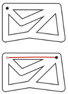
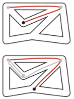
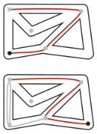
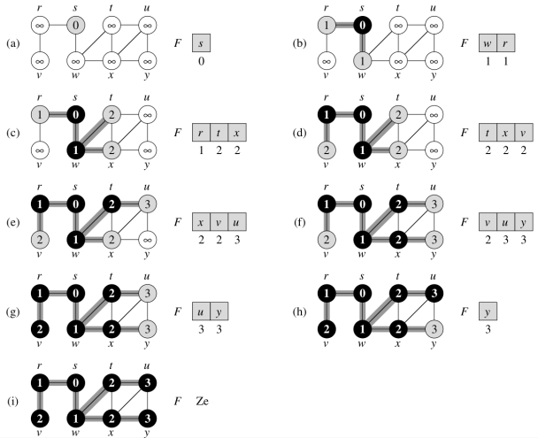

ALGORITHMES SUR LES GRAPHES¶
Parcours en profondeur d’abord¶
Repères historiques¶
Le premier algorithme de parcours de graphe est à rapprocher de l’exploration d’un labyrinthe. Il a une origine historique qui remonte à l’antiquité: Thésée et le Minotaure. D’après l’Ingénieur Trémeaux, pour sortir d’un labyrinthe avec un fil d’Ariane, il faut:
ne pas prendre deux fois un couloir dans le même sens, et …
devant un couloir déjà visité, rembobiner un peu la pelote de fil jusqu’au premier carrefour où débobiner devient possible.



Le parcours en profondeur¶
Les deux idées avancées au paragraphe précédent sont à la base d’un algorithme fondamental pour le parcours des graphes: le parcours en profondeur d’abord ou Depth-first search (DFS) en anglais. Il s’applique à n’importe quel graphe et permet de trouver tous les sommets joignables depuis un sommet de départ. En d’autres termes, il permet de dire s’il existe un chemin entre deux sommets.
Dans sa forme la plus classique, il s’agit d’un algorithme récursif très simple:
------------------------------------
Algorithme parcours_p(g, s, deja_vu)
------------------------------------
Entrées
g: graphe
s: sommet
deja_vu: dictionnaire de booléen caractérisant le statut d'un sommet.
Début
marquer s comme 'visité'
Pour chaque sommet v adjacent à s:
Si v n'est pas marqué:
parcours_p(g, v, deja_vu)
Fin Si
Fin Pour
Fin
Travail 1: Implémenter cet algorithme en python.
On utilisera l’interface de la classe GrapheOr2 du chapitre précédent, notamment pour avoir les voisins d’un sommet s.
def parcours_p(g, s, deja_vu):
"""
parcours récursivement, en profondeur, le graphe G, depuis le sommet s.
G: graphe
s: sommet
deja_vu: dictionnaire de booléen caractérisant le statut d'un sommet
(déjà visité ou non).
"""
# A compléter
pass
On peut aisément utiliser la fonction parcours_p pour savoir s’il existe un chemin entre deux sommets donnés.
def existe_chemin(g, s1, s2):
"""
renvoie un booléen correspondant à l'existence ou non d'un chemin entre s1 et s2.
g: graphe
s1, s2: sommets
"""
deja_vu = dict()
parcours_p(g, s1, deja_vu)
return s2 in deja_vu
Travail 2
Soit le graphe suivant
Existe-t-il un chemin entre D et C? entre A et E? entre E et G? Pour répondre à ces questions, on demande:
de construire le graphe avec la classe
GrapheOr2du chapitre précédent;d’appeler la fonction
existe_chemin.
from graphes import *
# A compléter
# Réponses
Parcours en largeur d’abord¶
Le parcours en profondeur permet de trouver un chemin entre deux sommets \(u\) et \(v\) (s’il existe) mais ne garantit pas que celui-ci soit le plus court. Si on a besoin de la distance entre deux sommets, il faut utiliser un parcours en largeur d’abord (en anglais Breadth-first search ou BFS).
Etant donné un graphe g = (S, A), l’algorithme du parcours en largeur permet de découvrir tous les sommets accessibles depuis un sommet de départ s. Dans sa forme la plus générale, il permet en outre, de trouver la distance d’un sommet avec s et de déterminer les relations ancêtre-descendant.
---------------------------
Algorithme parcours_l(g, s)
---------------------------
Entrées:
g: graphe
s: sommet de départ
Variables:
dist, pred: dictionnaire
F: file
Début
Initialiser une file vide F
Pour chaque sommets u de g:
dist[u] = infini
u n'a aucun prédécesseur
Fin Pour
dist[s] = 0
Enfiler(F, s)
Tant que F n'est pas vide:
u = Defiler(F)
Pour chaque voisin v de u:
Si dist[v] == infini:
dist[v] = dist[u] + 1
pred[v] = u
Enfiler(F, v)
Fin Si
Fin Pour
Fin Tant que
Fin
Déroulement de l’agorithme sur le graphe ci-après où le sommet de départ est ‘s’:

Travail 2 Dérouler cet algorithme à la main sur le graphe ci-après:

Travail 3 Compléter l’implémentation en python de cet algorithme
from queue import Queue
def parcours_l(g, s):
"""
"""
F = Queue()
dist = dict()
pred = dict()
for u in g.sommets():
dist[u] = float('inf')
pred[u] = None
dist[s] = 0
F.put(s)
# A compléter à partir d'ici
# Tester votre fonction sur le Graphe 1
g1 = Graphe(['A', 'B', 'C', 'D', 'E', 'F', 'G'])
g1.ajouter_arete('A', 'B')
g1.ajouter_arete('B', 'C')
g1.ajouter_arete('C', 'E')
g1.ajouter_arete('E', 'B')
g1.ajouter_arete('A', 'D')
g1.ajouter_arete('D', 'E')
g1.ajouter_arete('C', 'F')
g1.ajouter_arete('G', 'C')
Applications¶
Détection de cycle dans un graphe non orienté¶
Le parcours en profondeur permet de détecter la présence de cycle dans un graphe. On étudie ici le cas d’un graphe non orienté, le cas d’un graphe orienté sera traité en exercice.
Le graphe comporte un cycle si on traite un sommet voisin qui a déjà été rencontré et qui n’est pas le parent du sommet en cours d’exploration. On reprend le code du parcours en profondeur en:
y ajoutant un dictionnaire
parentqui garde une trace du parent de chaque sommet;renvoyant
Truesi un cycle a été détecté,Falsesinon.
def parcours_p2(g, s, deja_vu, parent):
"""
renvoie un booléen suivant qu'un cycle ait été détecté ou non dans le graphe g.
deja_vu: dictionnaire de sommets déjà rencontrés
parent: dictionnaire qui stocke le parent (valeur) d'un sommet (clé)
"""
deja_vu[s] = True
for v in g.voisins(s):
if v not in deja_vu:
parent[v] = s
if parcours_p2(g, v, deja_vu, parent):
return True
elif v != parent[s]: # Qu'en est-il d'un sommet déjà rencontré? si c'est le parent, on passe ...
return True
return False
Un fonction detection_cycle permet de mener une recherche à partir de n’importe quel sommet.
def detection_cycle(g):
for s in g.sommets():
deja_vu = dict()
parent = dict()
if parcours_p2(g, s, deja_vu, parent):
return True
return False
Exemples
# Graphe 1
g1 = Graphe(['A', 'B', 'C', 'D', 'E', 'F', 'G'])
g1.ajouter_arete('A', 'B')
g1.ajouter_arete('B', 'C')
g1.ajouter_arete('C', 'E')
g1.ajouter_arete('E', 'B')
g1.ajouter_arete('A', 'D')
g1.ajouter_arete('D', 'E')
g1.ajouter_arete('C', 'F')
g1.ajouter_arete('G', 'C')
#Graphe2
g2 = Graphe(['A', 'B', 'C', 'D', 'E', 'K', 'G'])
g2.ajouter_arete('A', 'B')
g2.ajouter_arete('A', 'G')
g2.ajouter_arete('A', 'K')
g2.ajouter_arete('B', 'E')
g2.ajouter_arete('B', 'C')
g2.ajouter_arete('A', 'D')
Les graphes g1 et g2 comportent-ils des cycles ? Appliquer “à la main” l’algorithme de détection sur g1. Vérifier le résultat dans une cellule Jupyter.
# Réponses
Références¶
Numérique et sciences informatiques - Balabonski, Conchon & al. - éd. ellipses
Algorithmique - CLRS - éd. Dunod
Site de David Roche : https://pixees.fr/informatiquelycee/n_site/nsi_term_algo_graphe.html